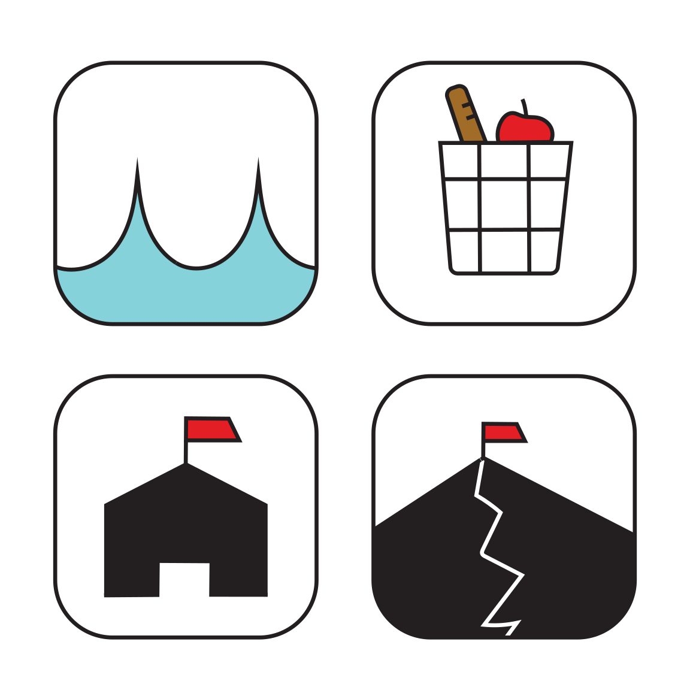
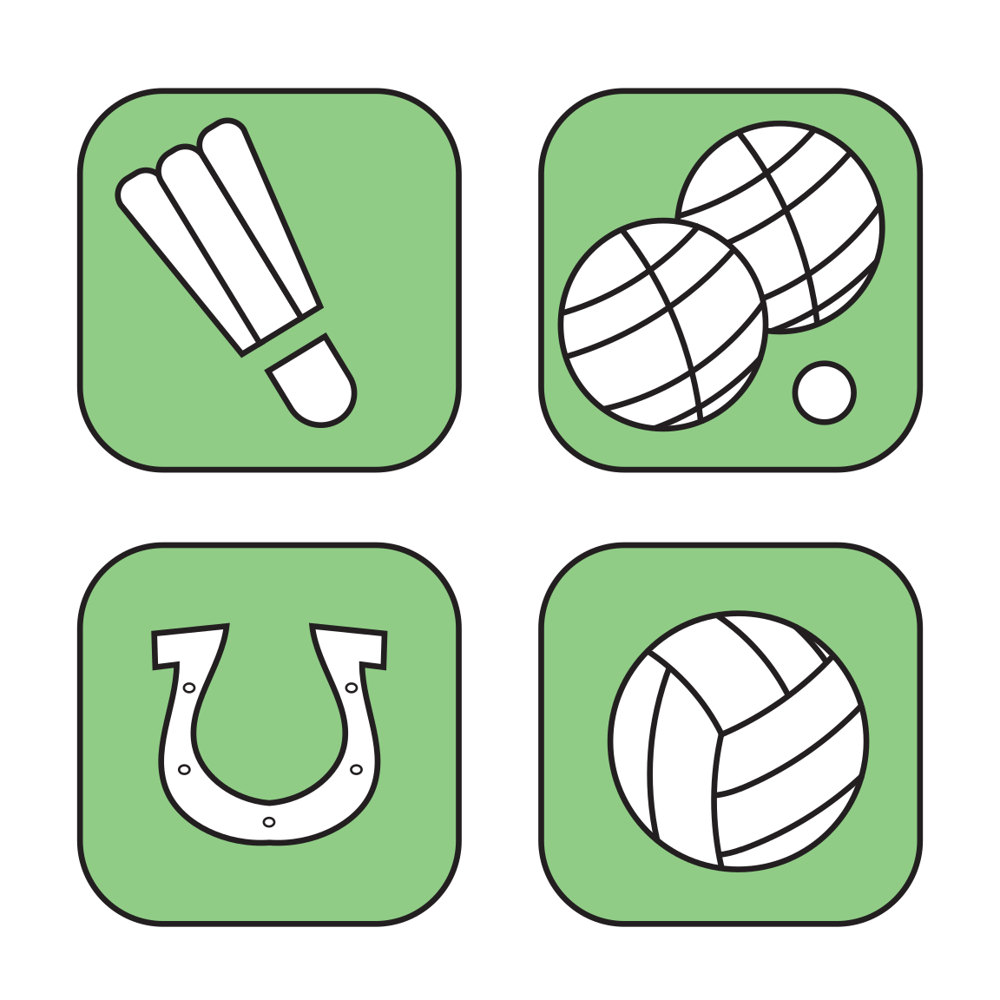

The idea here was to recreate the Griffith Park map to be more simpler for people who have never been. I kept all the relevant symbols and even added a museum icon for recreational things, since they were not marked before.
These were redesigns of previous icons for a campground. These ones are more simpler, with the picnic area being represented by a picnic basket. The picnic table is normally used to represent this, but a picnic basket is much easier to recognize.
This was for the local animal shelter, who were holding a fundraiser. I incorporated an animal-like face onto a masquerade mask to tie in both the theme and the fact that it is hosted by the animal shelter.
As with the campground icons, these are also made to be simpler and easy to recognize. I added in a light colored, paleish background so that it wouldn't be too jarring, since the thick lines in the drawings are already easy to see from a distance.